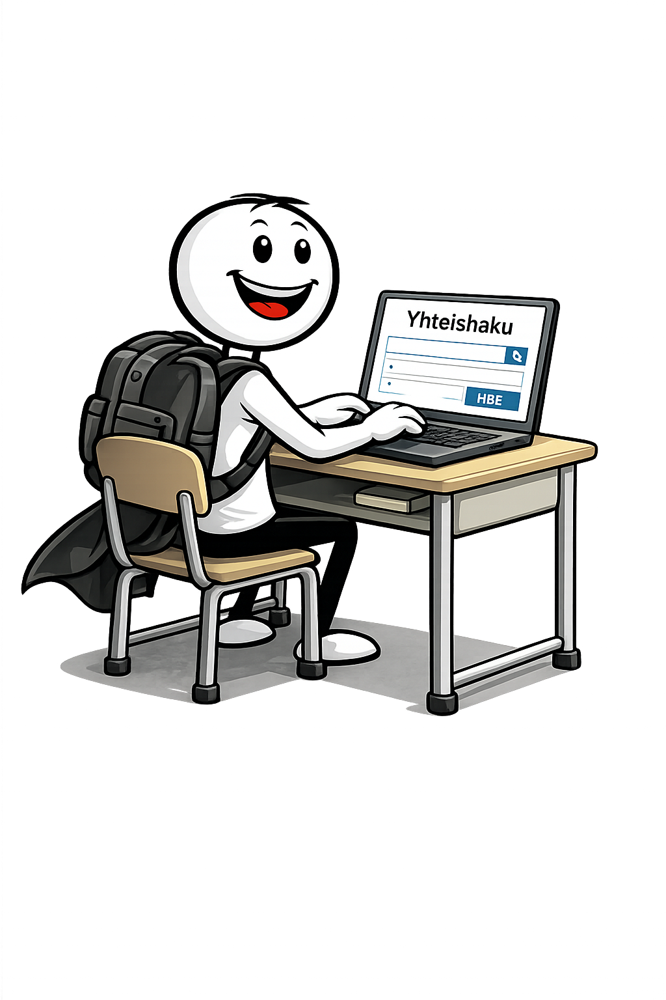

9. luokka – nyt tehdään valintoja
Nyt päätökset konkretisoituvat. Tutustut vaihtoehtoihin, kokeilet, vertailet ja valitset seuraavan askeleesi.
Minne peruskoulun jälkeen?
Millaisia vaihtoehtoja sinulla on?
Voit jatkaa lukioon, ammatilliseen koulutukseen tai muihin vaihtoehtoihin.
Ei ole vain yhtä oikeaa reittiä.

Yhteishaku – näin haet jatkoon
Yhteishaku on järjestelmä, jossa haet jatko-opintoihin. Valintasi vaikuttavat siihen, mihin voit päästä.

Käy kurkkaamassa: oppilaitokset
Tutustuminen auttaa hahmottamaan, millainen paikka sopii sinulle.

TET – miltä työ oikeasti tuntuu?
TET antaa kokemusta oikeasta työelämästä ja auttaa ymmärtämään eri ammatteja.

Pääsetkö sisään? Testaa valmiutesi
Testaa: lukio vai amis?
Kokeile ja katso, ymmärrätkö keskeiset käsitteet.
Kesätyö – eka askel työelämään
Kesätyö antaa kokemusta ja auttaa ymmärtämään työelämää.

Valinnat ratkaisee – pelaa päätöspeli
Mikä työ sopii mulle oikeasti?
Voinko tehdä tätä työtä?
Joissain ammateissa on vaatimuksia, kuten terveydellisiä rajoituksia tai fyysisiä vaatimuksia.
Tärkeintä on löytää sinulle sopiva vaihtoehto.